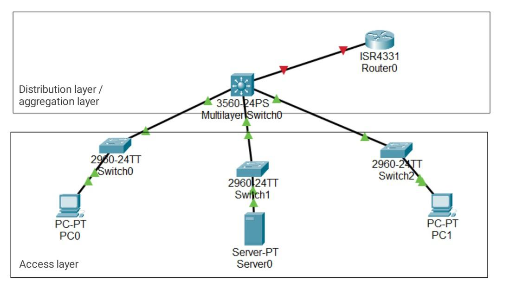
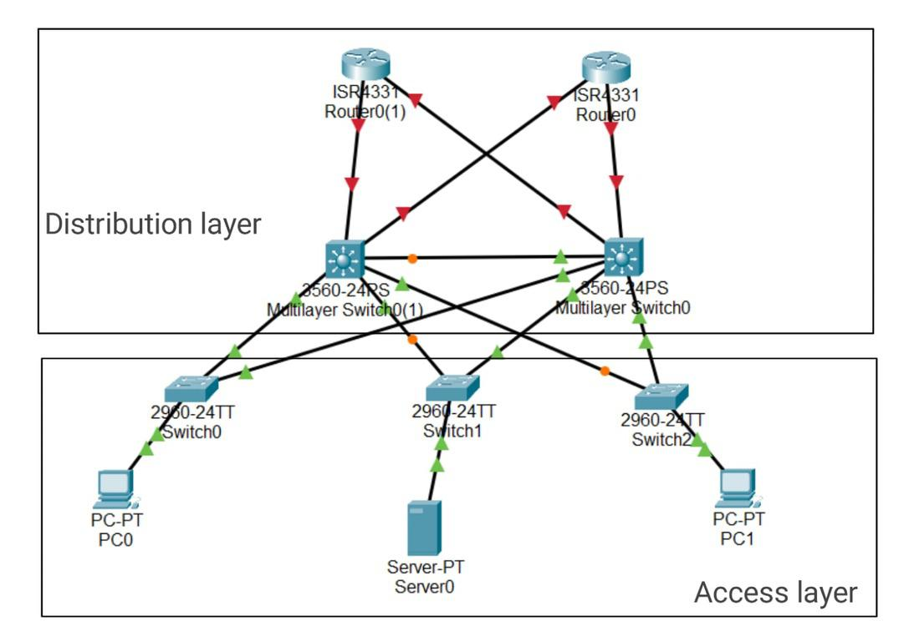
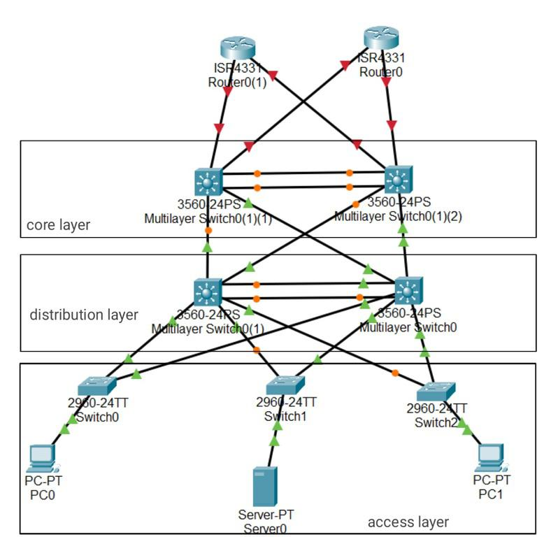

Network failure scenarios
See here for details.
For business sizing here.
2-Tier architecture ($$/$$$)

Improved 2-tier architecture ($$$/$$$$)

3-Tier architecture ($$$$$)

Conclusion
Only 3-tier architecture has enough resiliency for reliable out-of-band communication.
Large Corporate Firewall Issue
More info here.
Firewall implementation
- For out-of-band KVM communication, multiple firewalls need to be open.
- Firewall change takes 2 weeks to 3 months at each layer.
- For large corporates, it may be against the security policies to even expose the out-of-bound KVM.
Multi-node KVM
The KVM itself becomes a single point of failure if it manages multiple nodes.
Conclusion
Although some existing KVMs claim to offer out-of-band management, it only means KVMs are out-of-band capable and does not provide out-of-band capabilities straight away.
The only way to get out-of-band capability out of the box is to use a secure independent communication channel.